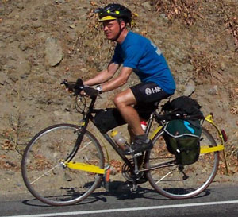

Volume 8 Issue 5 - October/November 2003
2004 SIR Brevet Schedule
2004 Season Preview
Logo Clothing and Jersey Updates
The SIR 1000K September 26-28, 2003
Chilly Waffles
Annual Meeting Notes
Road Snippets

NOTE: There will be no newsletter for December. Please send any equipment reviews, stories, photos or ride reports for the January/February newsletter to Jon Muellner! Thank you all for contributing!
For those of you on-line, join in the SIR email list! It's a great way to share info, ride schedules, car-pooling to events and training with other SIR members. To get on go to http://www.phred.org/mailman/listinfo/sir. It's easy!
SIR Volunteers Needed
SIR members wishing to help out on any of the brevets, please contact the organizer directly and offer your support. It's a great way to support the club and gain some insight for organizing your own brevet in the future!
| Date | Distance | Organizer | Route |
|---|---|---|---|
| Mar 6 | Red Hook route? | ||
| Mar 20 | Ron Himshoot | New route from Seattle | |
| April 10 | Peter Beeson | Tahuya Hills | |
| April 23-25 | Peter McKay | ||
| May 8-9 | Bill Dussler | ||
| June 5-6 | Jon Muellner | North Cascades; depending on Hwy 20 road repair | |
| June 25-27 | Mark Thomas | Carson/Ephrata (same as 2003) | |
| July 10 | Dave Read, Paul Johnson, Brian List | ||
| July 24 | Dave Read, Paul Johnson, Brian List | ||
| August 14 | Robin and Amy Pieper | ||
| September 4-5 | Owen Richards | ||
| September 25-26 | Wayne Methner |
By Jon Muellner
A spectacular year for SIR with a great double brevet series, a well attended Fleche, a unique 1000 km and of course, Paris-Brest-Paris. In France, we looked stunning in our new Orca SIR jerseys (or as some put it "Whale Jerseys" -that could be good or bad!) and our finish rate was great: 37 out of 40 starters completing PBP. We've grown to over 130 members and it looks like we have some great momentum for the coming year. Notable club changes include increasing the board to nine members: Amy Pieper, Bill Dussler, Greg Cox, Jon Muellner, Mark Thomas, Paul Johnson, Peter McKay, Terry Zmrhal, and Wayne Methner. Each brings a unique perspective and energy from both long-time experience and more recent insight. It's going to be a great year!Be sure to read the Annual Meeting Notes for all the details!
Jan Heine has stepped up to reorder SIR wool jerseys, based on last year's run of classic blue. The order went in the first week of November and should be here in a few months.
Random Notes by Kent Peterson
Jack Kerouac once said "first thought, best thought" when asked about how one should write, while Truman Capote described Kerouac's work by saying "that's not writing, that's just typing." Well, I'm too busy and too tired to write, so what you are reading now isn't writing, it's just typing.A set of Conti Sport 1000 tires will work great on a 1210 kilometer ride from San Francisco to Portland, the 300K ride from Portland to Issaquah and three weeks of 50K/day commuting from Issaquah to Redmond. If a man keeps using those exact same tires for the SIR 1000K, he is asking for trouble.
When you ask for trouble, you usually get it.
I had 4 flat tires in three days. If you have a flat in Enumclaw and think you have found the glass and don't need to change to your spare tire, you are wrong.
You will find this out on Orville Road when you get your second flat and then you will be smart enough to change to your spare tire.
You will flat your spare tire leaving the exit ramp near George a day and a half later when you run over some junk on the freeway shoulder.
Your last flat will be in Startup on the third night and it will be dark and you'll be down to your last decent spare tube and you'll limp in with a persistent slow leak that you just know is caused by some tiny Michelin wire that is best found in the bright light of some restful day. At night, you can ride for 10 kilometers, stop, pump, repeat until you get in.
Smokey has loads of clearance for big tires. After this ride, at least for the winter, he'll be sporting big, fat, tough tires.
There's a good coffee shop in Elbe. It is impossible to loose time by stopping for coffee. This fact has been verified many times.
It's really, really, really a good idea to load up on liquids in Randle. Normally I ride with two water bottles, but I bought two of those Sobe drinks that come in cyclist style water bottles. These spare bottles came in super handy on this ride.
On the climb up St. Helens I found a combination 8/10 mm open end wrench, which is a handy thing for cyclist to have. It may have been inadvertently dropped or perhaps purposely discarded in a desperate and misguided attempt to save weight on the climb.
When you have ridden up to Wakepish and the route does not turn right to go up to Windy Ridge, you might get the idea that while you know the road to the right goes up, the road going straight probably levels out. This is not even close to being true. There is something called Elk Pass and it's way the heck up there.
A Litespeed Blueridge can descend off Elk Pass much faster than a truck towing a trailer can. Wayne and I both verified this fact.
The control at Northwoods was super cozy. Phil and David a great job making sure that everyone was fed, consoled and informed of what lay ahead (more damn climbs and descents).
When climbing up to Oldman Pass in the dark, you can get within about half a meter of a deer. The deer will act very casual as it strolls across the road.
Wayne Methner, Peter Beeson and I all descended together. Yes, I can see in the dark and descend at 50 kph with just LED lights. Peter has one of those expensive rear hubs that buzzes like a miniature chainsaw when it freewheels. I've a super cheap Shimano RSX rear hub on Smokey and it's blissfully quiet.
Peter is a little too frisky sometimes. He missed the turn before the control at Northwoods and had to backtrack. He did something similar on the second to last turn before Carson Hot Springs. Wayne and I were more cautious and were double checking the cue sheet when Peter rocketed off.
Somehow I'd pictured Carson Hot Springs as being some kind of luxury resort. I was very wrong. It's got kind of a creepy vibe to it, like you'd expect that it's run by some guy named Norman who has his mother stuffed up in the house on the hill. Actually, I have no idea what the owners are like but at 10:30 PM on a Friday night when you realize that the only guests there are the folks from SIR, you do get the feeling like you're in reel one of an Alfred Hitchcock movie. Terry and David did their best to make things cozy, but it still wasn't the kind of place I'd pick to take a shower.
I slept for a few hours in Carson and left shortly before 2:00 AM. Twenty-five kilometers later, I had breakfast at the Bridge Mart but it didn't really wake me up. I tend to get sleepy right before dawn, so I pulled over into a rest area and slept for another forty-five minutes. A seven ounce Thermolite emergency blanket is so much nicer than a crinkly space blanket.
Early on route 142 just a bit before dawn, I pass within about half a meter of a really big skunk. He's just standing on the road shoulder as if to say "yeah, I'm a skunk, don't mess with me." I don't mess with him and ride on.
When the cue sheet says that the Chevron/Foodmart in Klickitat opens at 6:30 AM, this is pure fiction.
If the course designer has only driven the route in a car, he may tend to have and overly optimistic view of reality. For example, he may describe the terrain beween Klickitat and Goldendale as being "rolling with excellent views of the mountains." In my experience "rolling" terrain does not include switchbacks. "Rolling" terrain does not have one of those yellow signs at the top of it with a truck zipping down a triangle. "Rolling" terrain does not climb 1000 feet in 3 miles.
When there is a State park with bathrooms and water a few miles before the summit of Satus Pass, it might be a handy thing to have it noted on the cue sheet.
Eastern Washington is actually part of Mexico. All the people doing the work in the dry lands were Mexican, the signs were in Spanish and all the country looks just like Mexico. I mentally rehearsed the phrase "agua por favor" in the event I'd run out of water. I was very glad I still had the spare bottles strapped to my rear rack.
Parts of Eastern Washington/Mexico smell like grape jelly. This is kind of neat for the first thirty seconds and kind of annoying after an hour or so. I guess this is the smell you get when grapes are cooking on the vine in the 90+ degree heat.
There is a tavern at the intersection of 241 and 24 which is a place called Horse-thief Point. Later when I'm back at home and look at my map, I'll see that the tavern was exaggerating on the sign that proclaimed it to be in "the middle of nowhere". In fact it's in the Rattlesnake Hills where something called Dry Creek dumps into the Black Rock Valley. Another feature of interest is the Arid Land Ecology Reserve. And the place is not to far from the Hanford Nuclear Reservation. If Hanford ever blows up and spews radiation across this landscape, I doubt that most of the locals would notice and it doesn't look like it would change the ecology too much.
I was totally out of water when I got to the Vernita rest area. BTW, I'd been munching Little Debbie Oatmeal Creme Pies and bite-size Payday bars all day. A Powerbar costs about $1.39 and really isn't that tasty. $1.39 will get you a box of 12 Oatmeal Creme Pies and they are darn tasty. They are easier to open than a Powerbar as well.
I hadn't seen any other SIR riders all day but I suspected Ken Bonner and maybe some of the others may have passed me when I napped before dawn. At Desert Aire the friendly gas station clerk tells me that Bonner came through about an hour earlier. He hadn't seen any other riders, so the rest of the folks must be behind me.
The Wanepum Dam looks really cool at night.
It's a long haul into Ephrata and it's pretty windy there. I get in at 12:18 AM. Peg is running this control. Ken Bonner has already been in for a while and will be leaving around 2:00 AM. I eat and then sleep for a while in the same room as Ken. Ken sleeps like a machine that's been shut off. No sound whatsoever and it's like he's dead. Later when he wakes up, I wake up as well and we chat for a bit. Ken is aiming to finish in the early evening, I'm just hoping to finish sometime Sunday night instead of Monday morning. Ken takes off and I go back to sleep. When I get up around 4:00 AM, I see a lot more bikes parked at the motel. I have some breakfast and leave at 4:20 AM.
There is quite a headwind as I head out of Ephrata and onto Sagebrush Flat. Sagebrush Flat gets the "sagebrush" part of its name because about the only thing growing there is a lot of sagebrush. It gets the "flat" part its name for the same reason that three-hundred pound tattooed Harley riders are sometimes named "Tiny".
Shortly after dawn I'm riding through the Moses Coulee. This is an interesting, spectacularly desolate part of the world. Somebody is selling one acre plots in an area called Rim Rock for nineteen-hundred-ninety-five dollars and the houses/shacks/trailers that I see out there are interesting. It's kind of like Burning Man without the art. I don't see many humans but I do stop to examine a tiny creature resting on the road shoulder. It's about the size of a quarter and looks like a cross between a spider and a crab. It's not moving so I poke it with my gloved hand in my best impersonation of the Croc Hunter. Crikey! It's a grumpy one! It waves long front legs at me and I decide to leave it alone. It has that look of something that might be really toxic. Later at home I do a web search and find out that this little critter is in fact called a crab spider. You can see a picture of it here (scroll down aways):
http://cru.cahe.wsu.edu/CEPublications/eb1548/eb1548.html
There are a lot of lumpy bits between Ephrata and Waterville.
It's really fun to have a coasting bike for going down the Orondo Grade (6 miles at 6 percent).
It's really fun to have a tail wind when you are rolling South along the Columbia.
In Leavenworth I have a big iced latte and as I'm checking out I find out they make caffeinated mints. This is a handy thing to have.
It is a warm climb up the Tumwater Canyon and I sleep for 15 minutes at the Nason Creek Rest area.
A few miles before the Steven's Pass Summit, I leave my two full Sobe water bottles on guardrail posts. I figure I don't need the water now and some other cyclist might be running dry.
On this climb I find a ratcheting 1/4 and 5/16 combo closed end wrench. Tools just have a way of finding me.
I crest the pass at 5:15 PM. About six weeks earlier I'd seen Dan Henry route markers going off from the main highway at a thing called the Iron Goat Trail and then rejoining the highway several miles further down. I figured this must mark the old Cascade Highway route, so I take it down instead of the main road. It's really a cool little road, all paved with no cars at all on it. If anything, it's maybe a tiny bit longer than the main route, so I don't feel guilty about deviating from Highway 2.
Shortly after I rejoin Highway 2, Todd rolls up behind me. We ride together into Skykomish. I leave Skykomish before Todd but he later catches me and pulls out ahead. When I flat in Startup, I know I won't be catching up with Todd anytime today.
I pull into Mark's garage at 10:54 PM. Chris has wonderful food all ready to go and she and Todd and I chat about the ride. Ken Bonner is long gone. I call Christine and tell her I'm done with the ride but I'll be staying at Mark's tonight. I'll wait until light and in the morning I'll borrow a new tire and tube for my ride home.
I wake up when the some of the others come in. Everyone agrees it was an epic ride. And we had great weather. With this course, we could have hit snow in the passes. Just a few weeks before there had been a snowstorm at Stevens. Todd's computer listed about 11,000 feet of climbing for the first day and 9,000 feet of climbing on each of the following days.
That's it for now. I've got to get some more sleep.
by Paul Johnson
It was a dark and stormy night... Well it was actually a bright sunny Thursday afternoon, but as I was heading to Redmond for another SIR Brevet start in the morning I just tend to put my mind in dark and rainy mode...just in case. But in this case, there was every reason to believe that we would have clear and sunny weather.Gathered in the dark in Mark's garage the next morning at 5:30, the 11 starters exchanged stories and made last minute adjustments. It was dark and cool; I actually had a long sleeve jersey on. Just as we were about to leave, Ken Bonner had a flat. This meant there was a pretty good chance that I would see Ken somewhere on the ride, I usually only see him for the first three minutes.
We were away in the dark, dodging the first of the east side commuters. The ride went uneventfully until about 10 miles outside the first control at Cumberland store(37.8). I noticed that one of my cleats was getting loose. But I was riding in the group and didn't want to fall behind. I was feeling strong so kicked it up a bit and got to the control a little before everyone else. I had time to get my card signed, tighten my cleat, and visit the bushes. Ken Bonner got in shortly after me and left shortly before me, I figured that would be the last I saw of him. I got to Cumberland about on time so felt pretty good for the first 38 miles, now to get through the next 600!
Between Cumberland and Eatonville (79 miles) the sun came out and we got to stretch our legs over a few hills. I was still in the group which surprised me especially as I was feeling pretty good. I knew there was a climb ahead so I was out of the Eatonville control quickly, I figured I'd get caught. I also knew there were a number of riders ahead. Looking at my que sheet I realized I was into Eatonville about 1 1/2 hours faster than I had projected. I chalked it up to a miscalculation when I was figuring, these things have a way of evening out.
I did get caught and passed on the run into Elbe. On the climb over to Morton I was able to keep the group in sight, and on the descent I caught back on. The ride into Morton is always enjoyable to me, I leap frogged with Wayne Methner, it was great riding in the sun with very little traffic and great riding companions.
We stopped in Morton for a sit down lunch, grilled ham and Cheese and a bowl of clam chowder. To this point I had eaten a cold cut sandwich I picked up in Cumberland, and a couple bottles of SE. Breakfast was three cans of ensure, a banana, a small pastry and a couple of Starbucks double shots. Given the weather prediction I had been drinking a lot of water and taking endurolytes. The camel back was a bit of a problem. I had bought a new bladder so the water had that great straight from the garden hose taste. Out of Morton and up hwy 12 to Randle is challenging, the slight elevation gain sort of tells on me. I rode this with Dan and Diane form Texas, I offered to snap a picture of them should we get a look at Mt Rainier. I figured we'd get some nice views, but the Mtn doesn't really show itself until you get on towards Packwood.
I was, or tried to be quick out of Randle, it was 3:13 pm and Mt St Helens was between me and the first night destination. I was still 45 minutes ahead of my projected time, very surprising. Mark was away ahead of me.
I ride to Windy Ridge usually once or twice with the group from Oly, we go down there in the spring to see how bad we are, and once again in the fall to make sure we are still that bad. I wish we had been going to Windy Ridge for this ride because I felt like I was riding very strong, and this could have been my best time up the mountain.
I've been working on my climbing and it seems to be paying off, I'm not any faster, but more consistent which feels good. At the turn to Wakepish I am officially off the edge of my world. I assumed there was more climbing, and there was. I got to Elk Pass with Dan and Diane, they decided to stay awhile, I wanted to encourage them to get off the Mtn in the day light, not knowing what the descent was like, but we all have our own approaches. Dan needed a zip tie which I was glad to loan him, and then I was away. Mark and I leap frogged down the descent (there was a little more climbing, nothing is ever all down hill) a couple magnificent vistas of Mt St Helens, and an incredibly fun swoopy descent. Along the way Dave Huelsbeck stopped to see if I needed anything, the support on this ride was great as always.
I got into Eagles cliff (170 miles) at 7:24, about 2 and 1/2 hours quicker than I had projected, clearly I was climbing much better than I had expected! Philippe Andre was running the control, and did a fantastic job. Takes the bike and parks it, fills water bottles fixes sandwiches etc. I had a sandwich, a handful of chips and a coke. He also gave as a Q&D synopsis of the course profile into Carson Hot Springs: Something like 3 miles of descending, 7 miles of climbing and then the last 20 were rollers.
Oh that climb out of Curly Creek and up and over into the Wind River drainage was torture! I couldn't decide if it was like climbing Snoqualmie pass or that steep ascent into Mortagne au Perch. It was humbling, suddenly I'm not crowing about my new found climbing prowess, just wanting to keep the bike going fast enough so that I don't tip over. I was into Carson Hot Springs at 10:30, 3 and 1/2 hours ahead of my projection! This I am thinking is not just a math error, I'm riding faster than I expected. This presents a wonderful dilemma, to get up and leave earlier than I planned or get more sleep? As it turns out there is time to do both! After a quick sandwich and Cup O'Noodles, I'm off to bed.
I was up at 4:00 and after a disorganized morning, off with Peter Beeson and Dan Turner at 4:45. I had not seen either most of the day before, they were ahead of me. Dan missed us in Eatonville and assumed we were ahead so had chased all the way to Eagle Cliff only to learn he was ahead of us. Peter was just riding fast as he does these days. We were away, and at the junction of Hot Spring Ave they wanted to go back into Carson, I asked if that was the right way, "oh yeah this is the right way". A minute later they came streaming back, headed the other direction. I followed.
They got to the river ahead of me, and once there we were into the wonderful Columbia Rive gorge HEADWIND! It's the pits to be riding along this majestic river in the clear dark night and have the wind fighting you like a big hand on your forehead as Mark says. I worked to get back on with them; they had split, with Dan ahead. I went up to Dan and suggested that we work together, two against the wind is much better than one. He thought it was worth a try and I knew it would be a bonus. We paced together for a few miles and then Peter caught on. The three of us worked together on up to the Bridge Mart at the Hood River bridge. I had to shed clothes there; it was a balmy morning (still dark) and promised a warm day. We got water and treats there, the salmon fishermen definitely gave us those looks like "and we thought we were crazy". Out of the bridge mart I pulled out my P&J which Dave Hueslbeck had made me in Carson, P&J never tasted so good, THANK YOU DAVE!. We paced the rest of the way to the Klickitat river cutoff. Alternately riding through a vicious head wind and thick clouds of gnats! Yuk!
At the turn off, I stripped down, it was light here and not hot, but I knew we'd be climbing and I didn't want to over heat climbing out of the Columbia Gorge.
This was a really beautiful part of the ride It was serene and peaceful, we passed a big flock of wild turkeys, Fishermen were standing in the river waiting for that jerk on the end of the line (fishing: a jerk on one end of the line waiting for a jerk on the other end of the line). As we worked up the river bottom, the Columbia Breaks loomed ever closer. And then, there was no more flat meandering river. We started up and I noticed about a quarter of a mile above us, a road zig zagging off into the distance. Dan and I tackled this together, it was just a matter of finding that pace and keeping the pedals ticking over. Sounds so simple now.
Once on to the flats we were out in the open, arid dry land wheat country of Klickitat County. Fantastic views of Mt Hood and Mt Adams...and head wind. The sun was up now and it was heating up. Dan and I elected to combine our forces again to work against the wind.
We were into Goldendale (273 miles) strong. There was a nice restaurant, but it looked busy. We went in (Peter caught us here) and sat down. This looked like it was going to take some time. I told Dan and Peter it wasn't going to be any fun eating here with me as I would be tapping my foot the whole time. We elected to vacate the premises and go across the parking lot to the combination DQ, Subway, Chevron Speedy mart. Mark, Wayne and Todd were here. I had a subway breakfast sandwich, a bag of chips and a heath bar blizzard. Here I must digress to say I was a little disappointed not to be able to get a big bowl of French coffee and Pain au Chocolat' fresh from the oven. WAKE UP PAUL, that was last month.
From Goldendale to Toppenish is 48 miles and takes in Satus Pass (3107') and some of the most desolate high desert the Yakima Indian reservation has to offer. No shade, and the sun was up. I had elected not to bring my camelback for this day, and now that seems like it might have been a mistake. Peter had broken a spoke and Todd had helped him replace it. He had some eating and packing to do so Dan and I left. Dan dropped me right away. I was slow up to Satus Pass; it was just a long hard slog in the heat. Once over the top I let it roll down the other side and didn't push but tried to recover as best I could. I was drinking a lot and staying hydrated, but worried I would not have enough water.
I caught Dan out in the middle of the desert, he was making a little adjustment to his saddle. I know that feeling, how to find a comfortable position and even the slightest adjustment can make a big difference at 300+ miles. We paced together for a bit and I ran out of water with 10 miles to go. I knew I'd get into Toppenish but was worried I'd dehydrate and start a regression I'd never fully recover from. Dan gave me a bit of his accelerade and we pushed on. He pumped over the last climb, I stopped for a brief break. I thought this was my low point in the ride.
I dropped down into the Yakima valley looking for water. I stopped at a little mom and pop golf course with about 5 miles to go to Toppenish, I filled both bottles, drained one and filled it again. Five miles later I was at the control and had 1 bottle left. It was 95 degrees, and I was cooked!
I pulled into a restaurant at 4:30, Dan, Mark, Todd and Wayne were there, looking like escapees from Death Valley State Pen. There was some consolation in knowing that I wasn't the only one suffering.
At this point in these rides, hallucination collides with reality. I don't know if it is some physiological response to the deprivation of some obscure micronutrient not yet discovered, or just the brain getting a little over cooked, but it is fun, or at least interesting to watch randonneurs eat. Mark, Todd and Wayne and already eaten, but there was ample evidence to suggest that various soups, sandwiches, breakfasts and milkshakes had been consumed. When I sat down Dan was just finishing a bowl of chili. That went down pretty well so he promptly ordered up waffles, eggs and baconä I elected the standard Burger and fries, and a pitcher of ice water. The waitress here was great; we spread out all out gear, took off shoes and clothes and generally made a mess of the place. Rather than direct us to the bathroom to fill bottles and camelbacks, she took them to the drink station and filled them with ice and cold water.
It was hot and late and I wanted to push on, even though it was hot. Did I mention that it was hot? I knew the climb over the Horse Heaven Hills was going to be an unpleasant surprise to some, but I was back on my map of the world and knew what lay between us and the Vernita Bridge on the Columbia.
Wayne, Mark and Todd were away and I was next out of the door. MAN IT WAS HOT!!! The 8 miles to Granger was like descending through the 10th gate of Hell, What's up with this, it's almost OCTOBER! I stopped at the convenience store in Granger to top off my bottles, this would be the last water before the Vernita rest area, out past the Hanford gate and I did not want to run out of water again. The three ahead were just leaving. I filled bottles and bought an extra 20 ouncer to put in my bag when Peter rolled in. He did not look good. He had that thousand yard stare I've seen so many times as a medical unit leader in fire camp. I asked him how he felt. He said he thought he was just having one of those low spots. That was good, at least he was still self aware. He said Dan was not feeling too great. As I was leaving Dan rolled up, there was an urgency about him that belied his exhaustion. He said something to the effect that the Chili, waffles, and bacon and eggs were not producing the beautiful music he had been hoping for. I asked if he had any antacids. He said he did not.
I went to my bag and got a couple prescription strength zantac tablets. I offered and he was reluctant. I told him I thought they might do the trick and prepared to leave. As I was leaving Peter said to say hi to Peg for him at the Ephrata control, a bad omen.
I thought the ride into Toppenish was the low point, but actually the next leg to the top of the Horse Heaven Hills was the butt kicker. The name Horse Heaven Hills has me wondering; Basalt, sagebrush and hot dry wind, what's heavenly about that? Perhaps it's the place where horses die and THEN they go to heaven. Once through all the agribusiness of Granger, Zillah, and Grandview, the climb up to the top was very cruel. Shade trees really produce no marketable crop and so, no shade frees were to be found. A long steady climb and again an incredible headwind, combined to keep me in single digits. I stopped twice along this section, once in the shade of an errantly planted poplar, and then once to choke down some hammer gel and a half bottle of water. I was not sure I would see Peter or Dan again and I was pretty sure the three ahead were long gone. The only thing for it was to push on through this tough 25 mile stretch of wind and sage brush and climbing. As I got towards the top of the intermediate climb I could see the three ahead! I was shocked, I certainly did not think I would be gaining on them. At the turn onto Hwy 24 I caught them. We leapfrogged up to the top and then rolled down toward the Columbia.
A brief stop at the Vernita rest area, to water up and get the night riding gear on and then across the wide Columbia and head north. As dusk settled on the landscape, the thinnest sliver of a crescent moon hung low, just above the ridge across the river. As it got dark I hooked on with Todd who is a much stronger rider than I. He was happy to have some company and I was happy to pulled along though I did feel guilty for sitting his wheel. We were into Desert Aire (380 mi) at 11:00, I warned him about the graveled lot.
A sandwich, a bowl of soup, water and coffee here. Mark was now looking a bit punished. Before we left Peter and Dan showed! They both looked a lot better than the last time I saw them.
Back out on Hwy 97 pushing north up the river. Todd again invited me to ride with him. At one point I suggested I could pull too. He said it probably made sense for him to stay out front, but if I wanted he could pick up the pace a bit. I didn't want to hold him back so I said sure, that sounded fine. Five minutes later through gasps I suggested perhaps he could take just a little off the pace. From here to George we struggled with getting the right clothing. It seemed like it would be cold but soon we were taking clothes off. There is a big climb up to the top of the Columbia breaks, then you rapidly descend down to the river where 97 meets I-90 at Vantage, only to climb all the elevation again, ouch. The James Taylor Concert at the Gorge had just gotten out, I was glad we were not going the other way.
We stopped in George for water and a break before pushing on to Ephrata. This was really beautiful riding. Off I-90 and onto state route 283. No traffic, the beautiful night sky, the smell of sage brush, and the warm autumn air were great. We rolled along, softly talking of other rides, and other times. It was windy into Ephrata (431 mi), and it was good to be off the bike. 4:00 am, just shy of 24 hours since I started the day in Carson Hot Springs.
Peg had her control set up well and was very helpful and supportive. Sandwich and cup O' noodles and I was off to a shower and bed.
I was up at 6:00 and riding by 7:00. I had Peg make me another PB& J which I stuffed in my bag.
Out of Ephrata, we were up the Sagebrush Flats road. As Kent Peterson noted at rides end, Sagebrush Flats gets its name for the sage brush and the fact that there isn't anything flat any where near there. I crested Mt Sagebrush with Wayne and we talked briefly about different climbing styles and the geologic history of the area. This stretch between Ephrata and Waterville is really prehistoric looking, through Moses Coulee you get the feeling it would not be too surprising to see a wooly mammoth herd being stalked by a saber tooth tiger. An old pick up truck or a lost tourist passes about ever half our. That's heavy traffic on a Sunday morning. The wind is ever present, I know it's making me stronger, but I could do with a little less strength training just now.
Up on Hwy 2 I catch Wayne and Mark, stopped at an old creaking grange hall. About 12 miles to Waterville and I have, once again run out of water. This is really breaking the rando cardinal rule, "be thee ever prepared!" Mark offers me a scosch out of one of his big Ole Zefel Bottles, which I gladly accept. From here to Waterville, I'm scoping every farmhouse and weed patch for water. At the little whistle-stop of Douglas, I stop and circle. I know it is less than 5 miles to Waterville but already it is getting hot and I won't be leaving here without water. There is a little grassy spot with a picnic table and ah ha, a water spigot! I'm on that like a duck on a June bug. Mark rolls up and joins me with a big smile, I squat to fill my bottles, and as I rise to drink, the sky goes dark. I was able to reach out and grab the stand pipe to steady myself. I almost blacked out from rising too fast. Mark asks if I'm ok, and I am. I drank a full bottle there.
A half hour later we are sitting down to a bite in Waterville (478 miles). I do a quick mental calculation and realize that it's about 150 miles to the finish. It's not that many miles, but it includes my old nemesis Stevens Pass. I had a bowl of really good soup and a mushroom cheeseburger. It was great, a real mom and pop burger. It's 11:30 and a couple locals are just settling in at the bar with their first tall boys of the day, getting ready for NFL Sunday on the big screen. Man, I'm glad I'm into cycling.
Peter and Dan come in and order as we are leaving. Back outside I can see it's going to be another scorcher. Ahead we have the Orondo Grade, back down to the Columbia. 6 miles at 6%, this would probably take me an hour and a half to climb, but I'm riding the brakes all the way down and in 15 minutes we are watering up at the minimart at the bottom. Dan and Peter are in right behind us and Wayne lets them know we'll soft pedal till they catch on.
Half an hour later we are all together, in the scorching sun. At lest we don't have a head wind. Approaching the Wenatchee bridge over the river I notice that Dan's rear wheel has quite a wop to it, I suspect a broken spoke and let him know it's out of true. Climbing up out of the river toward Monitor it is incredibly hot and I suddenly have that warm wet feeling on my nose and lips that means bloody nose. It is not a gusher and I'm able to get it slowed pretty well but know I will need to stop. As we approach the top I let Mark know I'm going to stop at the top to take care of it. After checking to make sure I'm alright the rest move ahead to try to find shade. I'm sure it is hotter than it was the day before. It is sort of a funny sight, these west side cyclists are like banana slugs in a fry pan "where's the shade?"
I stop the flow, get cleaned up and roll on. They're at a milkshake/hamburger stand in Monitor. Dan chose not to replace the spoke but trued his wheel up, Wayne was patching a flat, a convenient pace for a flat! After milkshakes around we are all pretty much soaking up shade and avoiding going back out. I know I cannot sit there much longer or my legs will turn to blocks of stone. I am already having a few cramps and I need to push on to Leavenworth. I announce my intentions and oddly, everyone else gets up to ride too. Shortly Wayne has another flat, he's OK on his own so we push on through the heat. For some reason I'm getting a second wind, I really feel strong riding to Leavenworth. I'm a little concerned, knowing that from Leavenworth to the pass is essentially a 35 mile climb, why can't I feel like this later? Ah well take what is given and hope for the best later.
At the Big Y there is a large column of some to the east ands south. I was worried that they road might be closed because of fire, but it looks to be south of Highway 2. About on schedule into Leavenworth (520 miles), it was 4:23. A subway sandwich, 2 large cokes and we are off to stare down the demon.
I'm slow getting my legs out of Leavenworth. The sun is far enough to the west now that it doesn't penetrate down into Tumwater canyon. The Wenatchee River is really beautiful; in the big pools you can see dark schools of salmon waiting to ascend the next rapids. The patches of dark green pines and firs scattered among the old fire scars give a stark contrast to the bare white patches of granite on the canyon walls. It's a good place to slow down and look at the country.
We collected at the Nason Creek rest area, everyone waters up and gets their night riding gear on. I hang back a bit and let everyone else go ahead. I have it in my mind that this Pass has always owned me every time I have ridden it, but I'm interested in seeing just what I have in the tank, maybe this time I can have my way with the climb. I took it easy up to that big noisy transfer station or what ever it is. From that point I put the hammer down, took my HR up to the edge, lowered my head and cranked. I tried to fiddle with my computer and watch, I wanted to get some numbers out of this but in the inky black night it wasn't going to happen.
I was streaming sweat as I got to the ski area. Really sucking in air by the quart, but I felt like I had taken a little bit back from this climb, still a rhino on wheels, but I felt good about my effort. Roberto Heras, fear not, your place in history is safe from me.
We all geared up and agreed to ride the descent essentially together, more chance of motorists seeing 5 of us than one. Just as we were going off, I noticed Peter was stopped, fiddling with his lights. I asked if he was ok, he said yes but he was having light problems so I went on. Shortly I realized that Peter had not come over the top. I let Wayne know I was going to wait for him and stopped. Minutes went by, more minutes and I had visions of Peter's wheel or hub coming apart or something. Just as I was talking myself into riding back up to the top he came in sight. He stopped when he got to where I was and said his Schmidt hub was not working, I offered to ride the descent with him, he said that would be great (he had a couple cateye bar mount lights as back up). I started out in the lead but in no time he was around me and off like a shot! I could not keep with him, what a descender!
We regrouped down the mountain and quickly Mark diagnosed the problem. Peter has two E6 lights and when the primary bulb burn out, all the lights go out as they are wired in line, not in series. A quick bulb replacement and once again Peter is lit up like the Puyallup fair on a Saturday night.
We tooled into Skykomish (571 miles, 54 more to go!) at 10:01. Here I'm now an hour ahead of my projection, definitely doing better on the climbs than I thought I would. Amy and Robin have a great control set up for us, coffee from thermoses, great gourmet cookies lots of chips. At this point, tired, sore, and dirty we are all giddy knowing that we are pretty close to the finish.
The last 50 miles has some rally challenging, STEEP! Hills, a couple shorites on Ben Howard road I was familiar with but the ride up Woodinville-Duvall road catches me off guard and once again I have visions of Mortagne Au Perche. The fast decent down 128th way, just 3 miles from the finish almost takes me out. There, racing toward me out of the inky blackness in the middle of the road is a dead raccoon, it looks to be about the size of a truck tire, and I miss it by inches, say a little prayer of thanks and get on the brakes!
As we are grinding up 156th, zigzagging back and forth, the last half mile, I ask Mark between gasps, "Were you thinking about this when you bought this house?" "We didn't ride back then" he wheezes.
I am into the finish at about 3:15; I had projected 6:00am. I finished stronger than the fall 1000K in 2002, but I definitely feel more punished than after PBP. We all swapped stories in Mark's kitchen. Listening to the more seasoned riders I got the impression that this ride might qualify as epic. I can't really say, they all seem to take me to the brink of the dark abyss.
Chris asked if I was hungry, I allowed as I had an inexplicable desire for chilly waffles, which got a good laugh and a few quizzical looks.
Hats off to another great SIR event. I learned a lot on this ride and had a another great time on my bike.
by Mark Thomas
The 2003 Fall General Meeting of the Seattle International Randonneurs was held October 25th at Hales in Seattle. We had a great turnout of members to swap stories, celebrate the past year, and plan for the future.
2003 marked the 10th year of SIR. The first SIR events were held in 1994 as part of the two-year qualification requirement for the 1995 edition of Paris-Brest-Paris. John Wagner, one of the founding members of both SIR and Randonneurs USA, shared some stories of the early days of both organizations. We also recognized several of the original 1994 participants in the audience ≠ Tom Brett, Don Harkleroad, Ron Himschoot, Tom Lawrence, Max Maxon, Greg Sneed, Duane Wright, and Terry Zmrhal.
SIR had a lot to celebrate in 2003. Our membership went over 100 to more than 130, about 1/3 of which were new this year. We had 97 finishers on two 100km populaires, 136 finishers on four 200km brevets, 104 finishers on four 300km brevets, 69 finishers on two 400km brevets, 74 finishers on three 600km brevets, and 14 finishers on two 1000km brevets. We also had 7 teams participate in our fleche. With 28 official finishers, the Fleche Northwest was the largest in the US this year.
SIR sent its largest delegation ever to the 2003 edition of Paris-Brest-Paris. With 41 entrants and 37 finishers, we eclipsed our 1999 representation (22 and 15). SIR was one of the largest groups represented in Paris. Many of the finishers were present at the meeting, including Peter Beeson, Bob Brudvik, Greg Cox, Jan Heine, Don Harkleroad, Paul Johnson, Ken ≥Dr. Electron≤ Krichman, Ron Lee, Brian List, Jon Muellner, Bob Magyar, Amy Pieper, Robin Pieper, Dave Read, Owen Richards, Jim Sprague, Adam Stritzel, Don Smith, Lyn Vigesaa, Duane Wright, Bob Winn, Terry Zmrhal, and yours truly.
We expect to have over 1900 ACP points once official PBP results are available. Official results for US riders should be in the November RUSA newsletter, so watch your mailboxes. Riders on SIR events covered more than 200,000 kilometers or 5 times around the earth at the equator! SIR distance freaks were encouraged to apply for the RUSA 1000km, 2000km, 3000km, 4000km, and 5000km awards.
The many volunteers that made 2003 a success were thanked.
Brevet volunteers included:
1. 100k - Mark Thomas, Wayne Methner
2. 200k - Greg Cox, Jeff Tilden, Mark Thomas
3. 300k - Ken Carter, Russ Carter, Bob Brudvik
4. Fleche - Peter McKay, Peter Beeson
5. 400k - Bill Dussler, Peter McKay, Mark Thomas
6. 600k - Jon Muellner, Mark Thomas, Trent and Melinda Morrow, Mike Meyers
7. 400k/600k/1000k - Mark Thomas, Max Maxon, Wayne Methner, Robin & Amy Pieper
8. 300k/300k/600k/200k - Terry Zmrhal, Duane Wright, Linda Knapp, Erin Zimniewicz
9. 300k - Dave Read, Paul Johnson, Brian List, Cathi Read, Dan Sumoi, Gina Sumoi
10. 200k - Paul Johnson, Dave Read, Brian List
11. 100k - Jan Heine, Amy Pieper, Robin Pieper, Jaye Haworth, Ted Vedera
12. 200k - Wayne Methner, Tom Brett, Kent Peterson
13. 1000k - Phil Andre, Terry Zmrhal, David Huelsbeck, Peg Winczewski, Robin & Amy Pieper
Other volunteers this year included the team that brought us the new whale jersey (Ken Carter, Bob Brudvik, Bob Magyar, Max Maxon, Dave Read); Bill Dussler, who arranged for the SIR/PBP 2003 Lands End clothing; Alex Taylor, who led a group of volunteers at the Bike Expo; and Duane Wright, who ordered the nice 100k Populaire pins.
After some discussion, the membership agreed to take advantage of the outpouring of enthusiasm for building our future by amending the charter to expand the Executive Board to nine members (including the 3 officers). Look for a new board soon. The current officers were also re-elected ≠ Jon Muellner ≠ Webmaster, Terry Zmrhal ≠ Treasurer, and Mark Thomas ≠ RBA.
We went over the event schedule for 2004. The following is a list of the events and their organizers. For those of you still interested in volunteering to help with a brevet, please contact me or any of the organizers.
100 km Populaire: March 6 - TOM LAWRENCE
200 km: March 20 - RON HIMSCHOOT
300 km: April 10 - PETER BEESON
Flèche Northwest: April 23-25 - PETER MCKAY
400 km: May 8-9 - BILL DUSSLER
600 km: June 5-6 - JON MUELLNER
1000 km: June 25-27 - MARK THOMAS
100 km: July 10 - DAVE READ, PAUL JOHNSON, BRIAN LIST
200 km: July 24 - PAUL JOHNSON, BRIAN LIST, DAVE READ
300 km: August 14 - ROBIN & AMY PIEPER
400 km: September 4-5 - OWEN RICHARDS
600 km: September 25-26 - WAYNE METHNER
We also discussed the opportunities to schedule additional events. Although not eligible for ACP credit, RUSA brevets and RUSA populaires can still be added to the calendar. If anyone is interested in organizing an event, please let me know. RUSA has also adopted a program of Permanents. A Permanent is like a brevet but you can ride it any time, not just on one specific date. Like brevets, routes can start and finish in the same location, but they can also run point-to-point, and can be any distance of 200km+ (100-199km for a Permanent Populaire).
We discussed many different ideas for strengthening the club in the future, and several people volunteered to lead efforts in this area. Terry Zmrhal and Amy Pieper will lead an effort to create randonneuring clinics to introduce potential members to the sport and to teach essential skills. Paul Johnson and Jan Heine will lead outreach and publicity efforts to attract more riders. Tom Lawrence will lead a committee to look into recreating some of our old jerseys. Bill Dussler will head up our efforts to create Permanents. Greg Cox will lead efforts to recognize volunteer assistance and member achievement. All SIR members interested in helping with any of these efforts, please contact these people (or me) to get involved.
Terry Zmrhal's Winter Series VIII training rides will be happening again this year, stay posted for the updated schedule by the end of the year. As always, these rides are at your own pace, no leader, but Terry has created the routes and dates to ride. Thanks to Terry for the effort on this well-received start to the season!
Greg Cox, Bill Dussler, Paul Johnson, Peter McKay, Wayne Methner, Jon Muellner, Amy Pieper, Mark Thomas, Terry Zmrhal
Membership Fee:
$8.00 - full membership w/e-mail newsletter or
$15.00 - full membership w/printed newsletter.
Membership Address:
c/o Terry Zmrhal
9531 112th Ave NE
Kirkland, WA 98033
(425) 883-1701